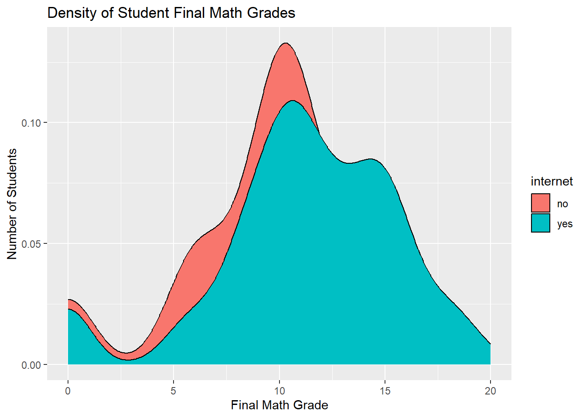

## Join via code provided in zipd1=read.table("student-mat.csv",sep=";",header=TRUE)d2=read.table("student-por.csv",sep=";",header=TRUE)d3=merge(d1,d2,by=c("school","sex","age","address","famsize","Pstatus","Medu","Fedu","Mjob","Fjob","reason","nursery","internet"))print(nrow(d3))
[1] 382
library(tidyverse)
── Attaching core tidyverse packages ──────────────────────── tidyverse 2.0.0 ──
✔ dplyr 1.1.4 ✔ readr 2.1.5
✔ forcats 1.0.0 ✔ stringr 1.5.1
✔ ggplot2 3.5.1 ✔ tibble 3.2.1
✔ lubridate 1.9.3 ✔ tidyr 1.3.1
✔ purrr 1.0.2
── Conflicts ────────────────────────────────────────── tidyverse_conflicts() ──
✖ dplyr::filter() masks stats::filter()
✖ dplyr::lag() masks stats::lag()
ℹ Use the conflicted package (<http://conflicted.r-lib.org/>) to force all conflicts to become errors
## This will be used in further stepscombined_data <-inner_join(math_data, por_data, by =c("school","sex","age","address","famsize","Pstatus","Medu","Fedu","Mjob","Fjob","reason", "guardian", "traveltime", "studytime", "failures", "schoolsup", "famsup", "activities", "nursery", "higher", "internet", "romantic", "famrel", "freetime", "goout", "Dalc", "Walc", "health"))
The number 2 in the second row of the first table means that of students with no access to internet at home, 2 of them have a father who works in healthcare while also having a mother that works as a teacher
`summarise()` has grouped output by 'Pstatus'. You can override using the
`.groups` argument.
# A tibble: 2 × 6
# Groups: Pstatus [2]
Pstatus at_home health other services teacher
<fct> <int> <int> <int> <int> <int>
1 A 1 2 15 9 4
2 T 43 28 101 66 51
## stacked bar graphggplot(data = combined_data, aes(x = internet, fill = Mjob)) +geom_bar() +labs(x ="Internet Accessability", y ="Count of mothers with each job", title ="Student's Mothers' Jobs based on Internet Accessability") +scale_fill_discrete("Mother's Job")
The bar chart above shows that students without internet access typically have mothers who work from home or fll under the “other” category in terms of job.
## side-by-side bar graphggplot(data = combined_data, aes(x = internet, fill = Mjob)) +geom_bar(position ="dodge") +labs(x ="Internet Accessability", y ="Count of mothers with each job", title ="Student's Mothers' Jobs based on Internet Accessability") +scale_fill_discrete("Mother's Job")
The bar chart above shows that the number of students with stay at home mothers is quite close between those with and without internet despite there being many more students with internet.
## finding center & spread of numeric variablescombined_data |>summarize(across(c("G3.x", "G3.y", "absences.x"),list("mean"=~mean(.x, na.rm =TRUE), "sd"=~sd(.x, na.rm =TRUE)),.names ="{.fn}_{.col}"))
This summary shows that the sd for final grades in math is noticeably higher than the sd for final grades in Portuguese. This means there are likely more students who both struggle and excel in the subject compared to Portuguese.
## finding center & spread of numeric variables while sub-setting for students with internet at homecombined_data |>filter(internet =="yes") |>summarize(across(c("G3.x", "G3.y", "absences.x"),list("mean"=~mean(.x, na.rm =TRUE), "sd"=~sd(.x, na.rm =TRUE)),.names ="{.fn}_{.col}"))
This summary shows that even when only looking at students with internet access, the sd for final grades in math is noticeably higher than the sd for final grades in Portuguese.
## finding center & spread across a single grouping variablecombined_data |>group_by(internet) |>summarize(across(c("G3.x", "G3.y", "absences.x"),list("mean"=~mean(.x, na.rm =TRUE), "sd"=~sd(.x, na.rm =TRUE)),.names ="{.fn}_{.col}"))
This summary shows that on average the final grades of students in both courses are higher when they have access to internet at home.
## finding center & spread across two grouping variablescombined_data |>group_by(Pstatus, Mjob) |>summarize(across(c("G3.x", "G3.y", "absences.x"),list("mean"=~mean(.x, na.rm =TRUE), "sd"=~sd(.x, na.rm =TRUE)),.names ="{.fn}_{.col}"))
`summarise()` has grouped output by 'Pstatus'. You can override using the
`.groups` argument.
# A tibble: 10 × 8
# Groups: Pstatus [2]
Pstatus Mjob mean_G3.x sd_G3.x mean_G3.y sd_G3.y mean_absences.x
<fct> <fct> <dbl> <dbl> <dbl> <dbl> <dbl>
1 A at_home 6 NA 11 NA 6
2 A health 10 1.41 14.5 0.707 10
3 A other 11.5 3.20 12.9 2.05 10.9
4 A services 13 3.64 14.6 2.19 9.67
5 A teacher 13.2 5.06 13.2 2.99 8.75
6 T at_home 9.67 4.59 12.5 2.72 4.37
7 T health 12.7 3.90 14.0 2.47 4.39
8 T other 10.4 4.00 12.3 3.51 5.11
9 T services 11.8 4.78 12.8 2.59 5.35
10 T teacher 11.2 4.18 13.4 2.35 4.73
# ℹ 1 more variable: sd_absences.x <dbl>
This summary shows that regardless of parental cohabitation status, students typically have a higher final grade in math when their mother works a job.
## correlation matrix of all numeric variablescombined_data |>select(age, absences.x, absences.y, G1.x, G1.y, G2.x, G2.y, G3.x, G3.y) |>cor()
This summary shows that there is a high correlation between students who score well in the first period with the second period.
## histogramsggplot(data = combined_data, aes(x = G3.x, fill = internet)) +geom_histogram() +labs(x ="Final Math Grade", y ="Number of Students", title ="Distribution of Student Final Math Grades")
`stat_bin()` using `bins = 30`. Pick better value with `binwidth`.
ggplot(data = combined_data, aes(x = G3.y, fill = internet)) +geom_histogram() +labs(x ="Final Portuguese Grade", y ="Number of Students", title ="Distribution of Student Final Portuguese Grades")
`stat_bin()` using `bins = 30`. Pick better value with `binwidth`.
These graphs show that students without internet access have no achieved the top final grades in math, but have in Portuguese.
## kernel densityggplot(data = combined_data, aes(x = G3.x, fill = internet)) +geom_density() +labs(x ="Final Math Grade", y ="Number of Students", title ="Density of Student Final Math Grades")

ggplot(data = combined_data, aes(x = G3.y, fill = internet)) +geom_density() +labs(x ="Final Portuguese Grade", y ="Number of Students", title ="Density of Student Final Portuguese Grades")
These graphs show that students’ final Portuguese grades are less spread out than their final math grades.
## boxplotsggplot(data = combined_data, aes(x = G3.x, fill = internet)) +geom_boxplot() +labs(x ="Final Math Grade", y ="Number of Students", title ="Boxplot of Student Final Math Grades")
ggplot(data = combined_data, aes(x = G3.y, fill = internet)) +geom_boxplot() +labs(x ="Final Portuguese Grade", y ="Number of Students", title ="Boxplot of Student Final Portuguese Grades")
These boxplots show that on average students with internet access have better final grades in both subjects.
## scatterplotggplot(data = combined_data, aes(x = absences.x, y = G3.x, color = internet)) +geom_point() +labs(x ="Math Class Absenses", y ="Final Math Grade", title ="Number of Math Class Absenses vs Final Math Grade") +geom_jitter(width =0.2, alpha =0.3)
ggplot(data = combined_data, aes(x = G1.x, y = G3.x, color = internet)) +geom_point() +labs(x ="First Period Math Grade", y ="Final Math Grade", title ="First Period Math Grade vs Final Math Grade") +geom_jitter(width =0.2, alpha =0.3)
The scatter plots show that there is a stronger positive linear trend between first period math grades and final math grades than math class absences and final math grades.
## scatterplot with facetingggplot(data = combined_data, aes(x = absences.x, y = G3.x, color = internet)) +geom_point() +labs(x ="Math Class Absenses", y ="Final Math Grade", title ="Number of Math Class Absenses vs Final Math Grade") +geom_jitter(width =0.2, alpha =0.3) +facet_wrap(~ Pstatus)
ggplot(data = combined_data, aes(x = G1.x, y = G3.x, color = internet)) +geom_point() +labs(x ="First Period Math Grade", y ="Final Math Grade", title ="First Period Math Grade vs Final Math Grade") +geom_jitter(width =0.2, alpha =0.3) +facet_wrap(~ Pstatus)
These scatter plots show that parental cohabitation status does not have much impact on the conclusions made about the previous plots.
## scatterplot with faceting with 2 categorical variablesggplot(data = combined_data, aes(x = absences.x, y = G3.x, color = internet)) +geom_point() +labs(x ="Math Class Absenses", y ="Final Math Grade", title ="Number of Math Class Absenses vs Final Math Grade") +geom_jitter(width =0.2, alpha =0.3) +facet_grid(Mjob ~ Pstatus)
ggplot(data = combined_data, aes(x = G1.x, y = G3.x, color = internet)) +geom_point() +labs(x ="First Period Math Grade", y ="Final Math Grade", title ="First Period Math Grade vs Final Math Grade") +geom_jitter(width =0.2, alpha =0.3) +facet_wrap(Mjob ~ Pstatus)
These scatter plots show that there is a strong linear relationship between first period math grades and final math grades across students whose mothers have all types of jobs.